Introduction to eye-tracking
Welcome to the course
Welcome to the course
Teaching team
- Esperanza Badaya
- Research focus: Speech comprehension (esp. paralinguistic cues & social cognition)
- esperanza.badaya@ugent.be
- Mariia Baltais
- Research focus: Reading (esp. influence of frequency & semantics on sentence processing)
- mariia.baltais@ugent.be
Welcome to the course
What about yourselves?
- Name & uni/department
- Research interest
- Goal for this course?
Overview of the course
Learning objectives
- Basic knowledge of how eye-trackers work and how to ensure high quality data
- Practice with EyeLink 1000+
- Understanding of eye-tracking measurements and their meaning in psycholinguistics
- Introduction to the Visual World Paradigm and reading.
- Set up, confounds, measures of interest.
- Introduction to eye-tracking data from raw data to analysis.
- Data pre-processing, wrangling, models and visualization.
Overview of the course
Materials (all available on Ufora and GitHub)
- Slides
- Template scripts in PsychoPy/OpenSesame/Experiment Builder
- Focus in class: PsychoPy
- Eye-tracking datasets
- Template scripts for pre-processing and analysis
- Further resources (papers & book chapters)
Requirements
- Install PsychoPy
- version
- Install R, RStudio
- version
- packages
- Install DataViewer
- Readings
- Experimental design .pdf
- Recommended readings per day
Overview of the course
| Date | Content | Materials |
|---|---|---|
| Day 1 | Introduction to eye-tracking | None |
| Day 2 | Visual World Paradigm | Experimental design .pdf, RR_1, PsychoPy |
| Day 3 | Reading | RR_2 |
| Day 4 | Lab session & Data pre-processing | DataViewer / R, datasets |
| Day 5 | Data visualization and analysis | R, datasets |
Any issues with installation, come to Mariia or myself!
Introduction to eye-tracking
Introduction to eye-tracking
- What is eye-tracking?
- Why do we track eyes?
- The human visual system
- Visual attention
- Eye movements
- How do eye-trackers work?
- An eye-tracking experiment
- The eye-tracking lab
- Basic structure of the experiment
- Eye-tracking in language research
- Visual World Paradigm
- Reading
What is eye-tracking?
What is eye-tracking?
Eye-tracking is a non-invasive technique to explore cognitive processes as they unfold (i.e., online processing). It has temporal resolution.
- As opposed to EEG, fMRI
- As opposed to offline measures (e.g., questionnaires)
- Converging evidence
Why do we track eyes?
The Human Visual System
Important parts of the eye’s anatomy:
- Cornea
- Pupil
- Retina
- Fovea
- Parafovea
- Periphery

The Human Visual System
- Light hits the cornea.
- Some light is reflected (Purkinje reflections)
- Light enters the eye via the pupil.
- The lens reflects the light onto the retina.
- Photosensitive layer with cones and rods.
The Human Visual System
Photoreceptors with different properties (e.g., spectral sensitivity, photopigments).
- Cones
- Color vision and spatial frequency (“visual details”).
- Well-illuminated conditions (photopic vision).
- Rods
- Black and white.
- Low-light conditions (scotopic vision).
The Human Visual System
They also differ in where they are located in the fovea.
- Cones: Highest density in the fovea.
- Rods: Higher density in the fovea’s periphery.
Consequence: Vision is sharpest in the fovea.
- 25% of visual cortex devoted to processing 2.5° of the visual scene.

The Human Visual System
But the fovea is a small section of our visual field.
- Space respect to our eyes that we can perceive.
- Measured in degrees of visual angle.
- Visual angle = object size / distance.
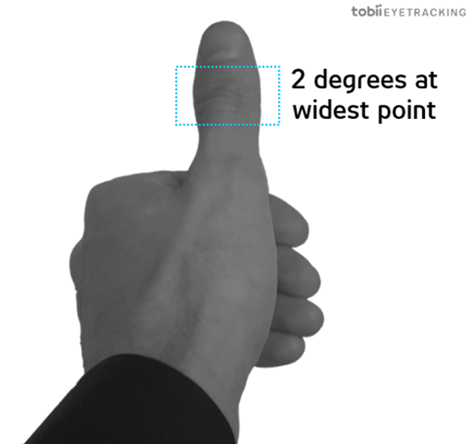
The Human Visual System
Retina:
- Fovea: 1-2 degrees of visual angle.
- Parafovea: 10 degrees of visual angle to either side.
- Periphery: Remaining space beyond the parafovea.
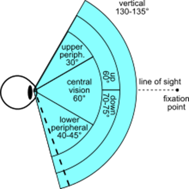
The Human Visual System
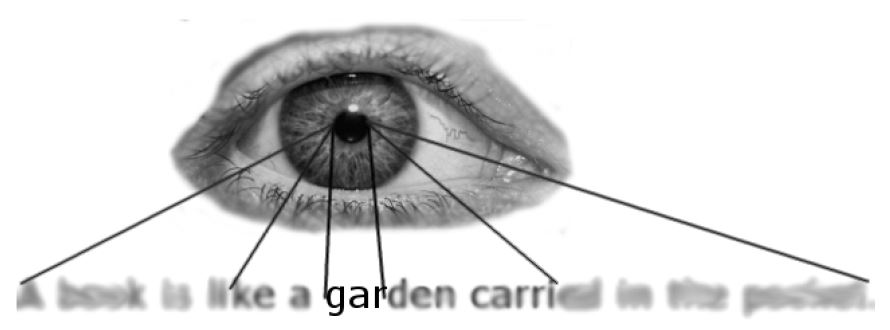
The Human Visual System
Therefore, we move our eyes to place visual stimuli in the fovea to process it with the highest acuity. Eye movements are a consequence of the eyes’ anatomy.
- Parafoveal processing: No acute image, words still partially recognizable.
- Periphery: Blurred image, no word/letter recognition.
Visual attention
What do you notice about the eye movements here? What do you infer from them?
Visual attention
Attention (i.e., linking hypothesis)
- Tracking eye movements can tell us what viewers are paying attention to.
Visual attention
Attention determines what we process and the detail of the representation built.
Visual attention
Attention (i.e., linking hypothesis)
- Bottom-up and top-down processes.
- Details that attract individuals’ attention (exogenous) v. Individuals’ strategies (endogenous).
- Individuals as active viewers.
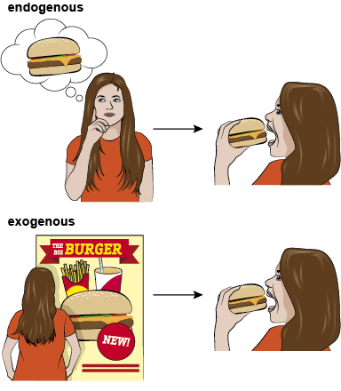
Visual attention
Yarbus (1960): Scan paths guided by attention.
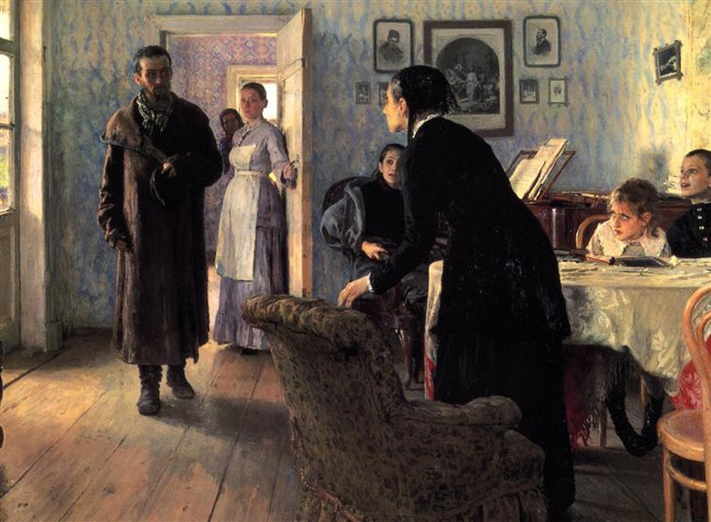They Did Not Expect Him, Iliá Repin
Visual attention

Visual attention

Visual attention
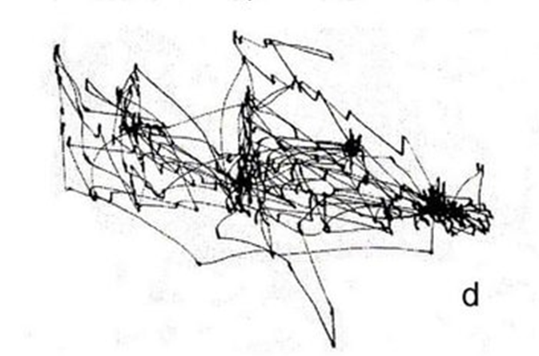
Visual attention
Attention is a bridge between our minds and eye movements.
Potential caveat
- Covert versus overt attention:
- Covert: Mental shift without physical evidence (e.g., looking at the slides while thinking about lunch).
- Overt: Moving your eyes to check what time it is.
We only have access to overt attention.
- But they are highly interlinked.
Visual attention
- In language1: The eye-mind hypothesis (Just & Carpenter, 1980).
- Where we look indicates what we are processing, for how long we look indicates the cognitive effort it takes to process it.
- This is an assumption (cf. Pickering et al., 2004; Magnuson, 2019).
Why do we do it?
- Visual acuity is highest in the fovea, but the fovea is a rather small section of the retina.
- Moving our eyes helps us to ‘place’ objects on the fovea.
- Why do we want to place something there? Arguably, because we are interested in it.
- We move our eyes to what captures our attention to process it.
Eye movements
Nature of eye-movements
- One dominant eye1.
- Binocular disparity:
- Relatively small in healthy subjects.
- Decreases over the time of a fixation.
- No complete temporal synchrony in eye movements.
Eye movements
What eye movements can you think of?
- Think of how we talk about things: we fixate on things, we move our eyes.
- We also blink.
- We can also measure pupil size.
Eye movements
What eye movements can you think of?
- Fixations.
- Saccades.
- Blinks.
- Smooth pursuit.
- Pupil size changes.
Fixations
When our eye ‘stops’, i.e., multiple gaze points close in time and/or space.
Automatic, physiological response.
Eye is relatively stable.
Average duration: 200 - 300 ms.
Minimal duration: 20 - 50 ms (not standard).
Fixations
When our eye ‘stops’.
- Eye is relatively stable.
- Tremor, drifts, microsaccades.
Saccades

Saccades
“Jerky” movement: Fast movement of the eye, usually from one fixation to another.
- Temporary blindness (i.e., saccadic suppression).
- Reactive saccades versus Voluntary saccades.
- Sudden appearance of an object versus Exploration.
Saccades
- Amplitude: distance travelled.
- Average: 15°.
- Average duration: 30 - 80 ms.
- Velocity, acceleration and deceleration.
- Direction: Forwards and backwards (i.e., regressions).
- Accuracy: Over- and under-shooting.
- In simple lab conditions, fall slightly short of the target, thus followed by a small corrective saccade.
Saccades
Forwards and backwards (i.e., regressions).
- Short and long regressions.
From Conklin et al., 2018
Blinks
By necessity, people blink.
- Usually, surrounded by saccades.
- Pupil changes when eyelids open/close.
- Mostly important for data processing.
- Lab conditions.
Smooth pursuit
A “moving fixation” ~ following a target.
- Slower than a saccade, but bounded by the velocity of the target being followed.
- Asymmetrical: Horizontal > vertical.
Pupil size
Pupil dilates for reasons other than light, e.g., cognitive effort.
Linking hypothesis: Pupil size reflects effort exerted.
- Harder tasks = increase in pupil size.
Increasing interest in language research, e.g., accented-speech comprehension.
Changes can take up to 3 s.
- Far longer than other eye events.
Eye movements
- There are five major eye movements (or events) that an eye-tracker can capture.
- Fixations refer to ‘stable’ gazes on a space for a sustained period of time. We usually describe them in terms of how many they are, when they start, and how long they are.
- Saccades are fast movements, commonly from one fixation to another. We describe them in terms of onset, offset, angle, velocity, latency, and acceleration.
- Smooth pursuits are fixations that move.
- Pupil size can change due to cognitive processing, whereby its size increases when effort is exerted.
Questions so far? Thoughts?
How do eye-trackers work?
How do eye-trackers work?
Old, rudimentary eye-trackers.
- Louis Émile Javal (1879)
- ‘Naked eye’ observations.
- Stop-start pattern in reading.
- Edmund Huey (1898)
- Primitive ‘eye-tracking’ device.
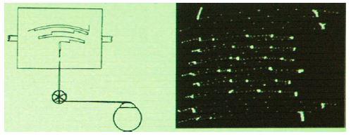
How do eye-trackers work?
- Alfred Yarbus
- Suction cups reflecting onto a photosensitive surface.
- Scan paths.
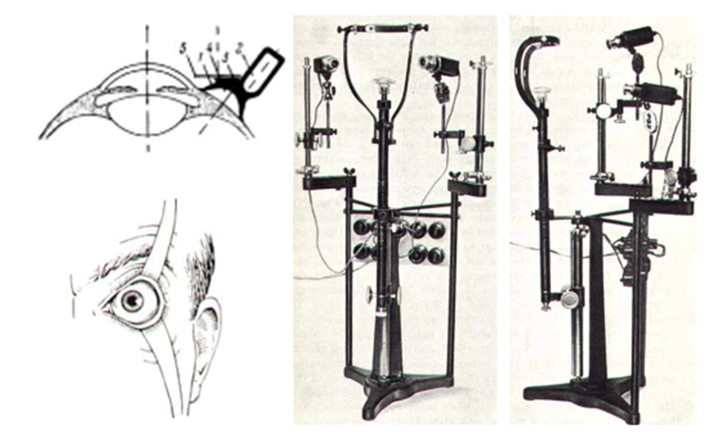
How do eye-trackers work?
Now you can see why nowadays eye-tracking is non-invasive.
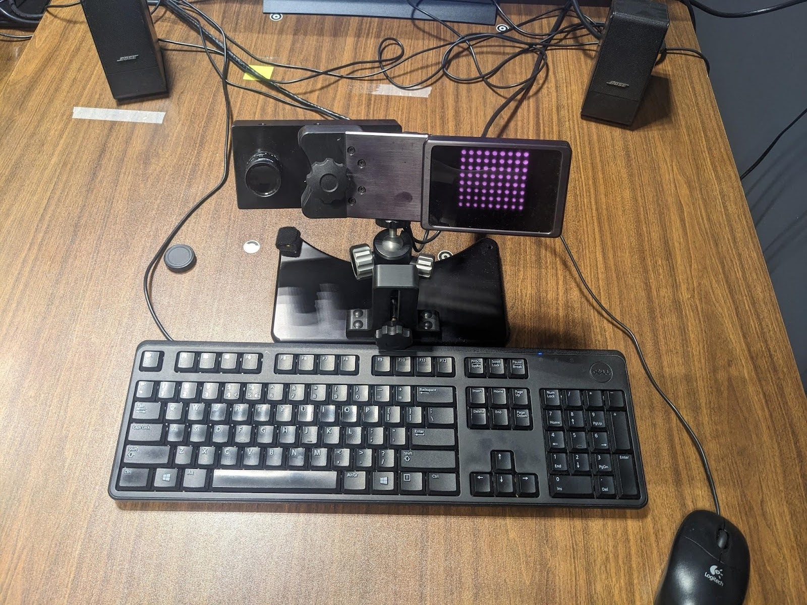
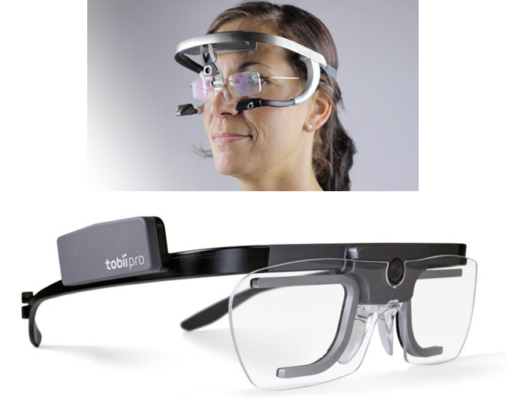
How do eye-trackers work?
- Detects gaze and records its x and y coordinates on the screen.
- Parse gaze position into eye events, e.g., any gaze points nearby close in time are grouped into a fixation.
How do eye-trackers work?
Detects gaze and records its x and y coordinates on the screen.
- Video-based recording of the location of either one point, the pupil, or two points, the pupil and the corneal reflection.
- P-CR (the pupil and the corneal reflection) is the most common.
- Two hardware components: A camera and an infrared illuminator (which are fixed in space).
- 1\(^{st}\) corneal reflection (Purkinje reflection 1).
How do eye-trackers work?
Detects gaze and records its x and y coordinates on the screen.
- Video-based recording of the location of two points: the pupil and the corneal reflection.
- Infrared light is reflected on the participant’s eyes.
- Camera picks up the corneal reflection.
- Algorithm-based image processing to identify these two locations
How do eye-trackers work?
Why pupil and corneal reflection?
- A ‘two-points of reference’ system.
- The pupil moves when we move our eyes (and so does its location on the camera).
- But corneal reflection does not (because the light source does not move).
- Compensate for small head movements.
How do eye-trackers work?
Why pupil and corneal reflection?
- A ‘two-points of reference’ system.
- Distance between pupil and corneal reflection changes with eye rotation, but is relatively constant with head movements.
- Pupil position - CR position.
Example of view of the pupil when the head moves.
How do eye-trackers work?
Detects gaze and records its x and y coordinates on the screen.
- How many times? Sampling frequency
How do eye-trackers work?: Sampling frequency
Sampling frequency (or rate): Number of times the tracker measures gaze position per second. Measured in hertz (Hz).
- 300 Hz: 1 data point every ~3 ms, 300 samples per second.
- 1 s is 1000 ms.
- 1000/300 = 3.33
- Higher sampling frequency = more data points, and closer in time.
How do eye-trackers work?: Sampling frequency
Question
- If our sampling frequency is 500 Hz, what is the time elapsed between each data point?
- 2 ms.
- And at 60 Hz?
- ~16 ms.
- And 2000 Hz?
- 0.5 ms.
How do eye-trackers work?: Sampling frequency
Relationship between sampling frequency and measure of interest.
- The faster it is, the higher the sampling frequency needed to detect it.
- Onset, offset, duration.
Example: 50 Hz sampling frequency.
- 50 samples in a second, one every 20 ms.
- A saccade starts in these 20 ms, we miss it.
- A fixation begins in these 20 ms, we get it, but misrepresent its onset.
How do eye-trackers work?: Sampling frequency

Measurement error represented by dashed line; picture taken when the vertical lines cross the horizontal lines.
How do eye-trackers work?: Sampling frequency
This is why sampling frequency matters.
Depends on your research question, e.g., reading versus observing a scene.
Reading usually requires higher sampling frequency.
Higher sample frequency = higher precision.
Considering as well the size of the object we are interested in.
- Big –> can afford low sampling rate, precision and accuracy might be ok.
- Small (e.g., reading) –> high sampling rate (>250 Hz).
How do eye-trackers work?: Sampling frequency
How small (or slow) can you go with the sampling frequency?
- Nyquist-Shannon sampling theorem
- Twice as large as the event you want to measure.
In reality, more like ‘rule-of-thumb’:
- 250 Hz
How do eye-trackers work?: Sampling frequency
How small (or slow) can you go with the sampling frequency?
Relationship between sampling error, sampling frequency, and data points.
- Lower sampling frequencies = more data points (power).
- NB: More data points might not be the solution.
Conventional: min. 500 Hz for picture viewing, min. 1000 Hz for reading.
How do eye-trackers work?
Detects gaze and records its x and y coordinates on the screen.
- How do we know that the x and y detected are good? Accuracy and precision
- Accuracy: Difference between the measurement and its true value.
- Precision: Ability to reproduce a reliable measurement.

How do eye-trackers work?
Detects gaze and records its x and y coordinates on the screen.
Accuracy
- Recorded gaze position versus the true gaze position.
- Methods to increase accuracy in the experimental session.
- Calibration, validation, drift correction.
- Screen corners.
- Data loss.
Precision
- Spatial precision: Eye fixating on a stationary target.
- Temporal precision: Standard deviation of delays from actual movements until they are marked (eye-tracker latencies).
How do eye-trackers work?
These properties impact data quality.
- The validity of results based on eye movement analysis are clearly dependent on the quality of eye movement data (Holmqvist et al., 2012)
How do eye-trackers work?: Types
Different eye-tracking systems on the market.
- SR Research, Tobii, SMI.
Differences in software, e.g., parsing of events and subsequent measures.
- Research question
How do eye-trackers work?: Types
Different types of trackers on the market as a function of:
Position camera wrt eye.
Lens zoom.
Software for parsing events.
Pros and cons of each.
- E.g., they differ in sampling frequency (head-mounted tend to have lower sampling frequencies).
How do eye-trackers work?: Types
How do eye-trackers work?: Types
Table-mounted, head fixed:
- Assumed constant distance.
- Camera and infrared light are above the participant’s head or fixed position near the monitor (desktop mounted).
- Head movement is restricted.
- Pros: High precision.
- Cons: Not suitable for all populations.
How do eye-trackers work?: Types
Table-mounted, head free:
Distance changes.
- Camera and infrared light can be on the table or monitor.
- Range of head movement.
- Head distance.
Pros: Generally, high precision; suitable for more populations.
Cons: The lack of head restriction can lower data precision.
Portable trackers.
Convertible trackers.
How do eye-trackers work?: Types
Head-mounted:
- Camera and infrared light are mounted on the participant’s head (e.g., with glasses)
- Pros: Ecological validaity.
- Cons: Usually, lower sampling frequencies, lower accuracy.
How do eye-trackers work?: Types
Eye-tracking without an eye-tracker.
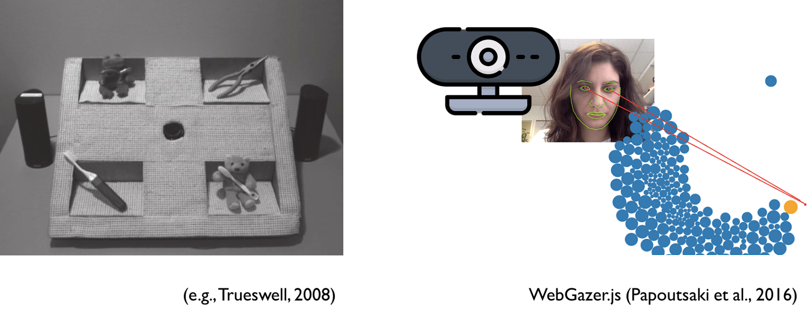How do eye-trackers work?: Types
Eye-tracking without an eye-tracker.
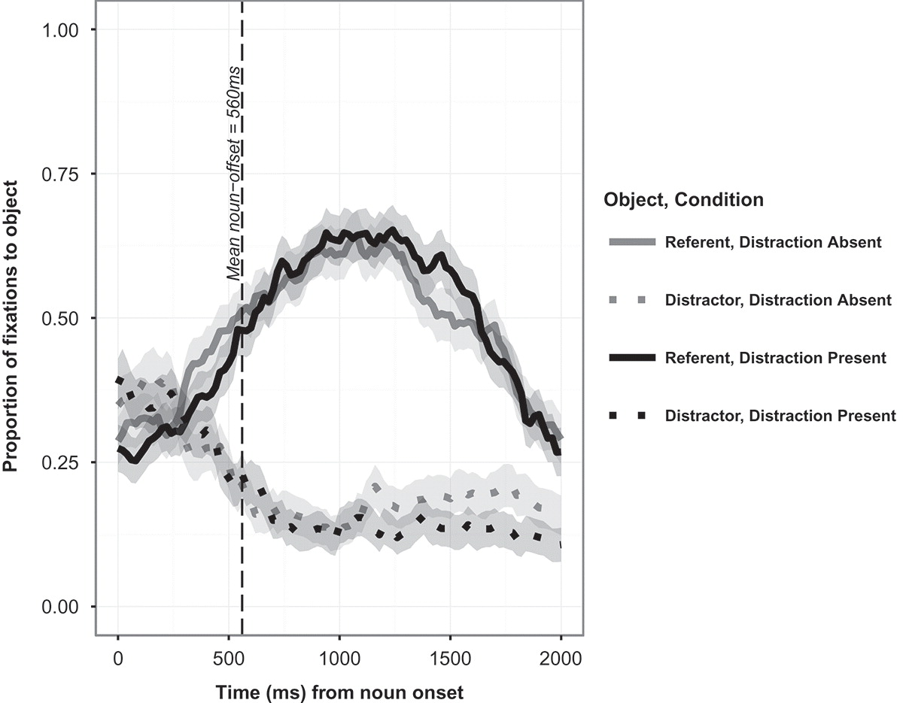
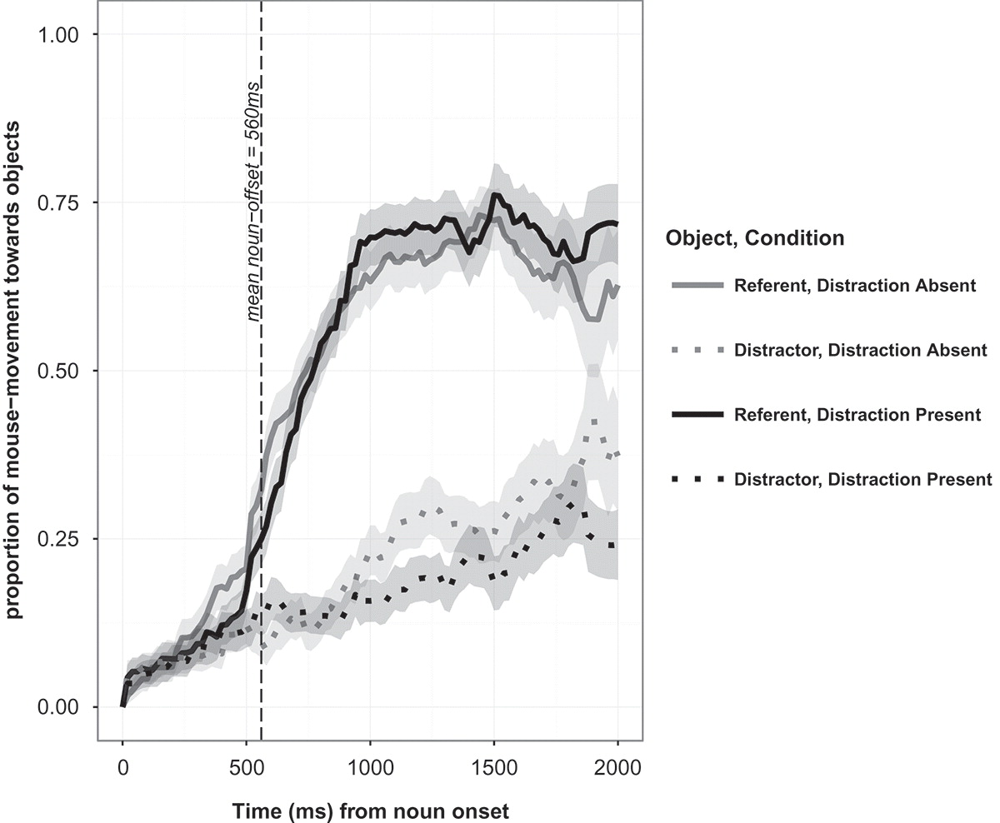
How do eye-trackers work?: Types
Combination with other techniques.
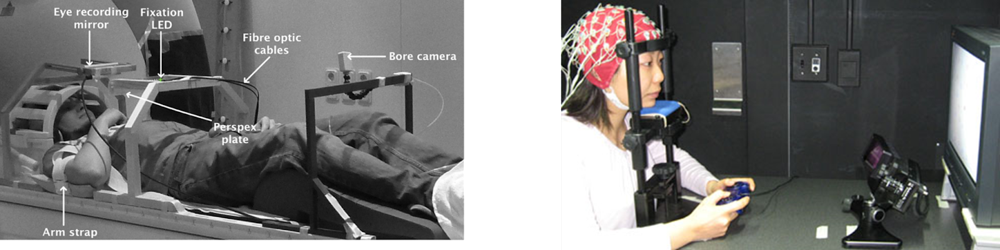
How do eye-trackers work?
- We track the x and y coordinates of gaze on a screen by figuring out the position of either the pupil or the pupil and the corneal reflection.
- How many times we record the x and y coordinates is determined by the sampling frequency.
- Our sampling frequency is determined by our measure of interest.
- We distinguish eye-trackers depending on the distance between the eyes and the camera.
Eye-tracking: Pros
- Widely applicable technique.
- Relatively easy to interpret.
- Can provide a huge range of online measures.
- Temporal precision.
- Relatively high ecological validity.
Eye-tracking: Cons
- Relatively expensive.
- In terms of money: up to 30,000 e (but in comparison to EEG?).
- In terms of time: one participant at a time1.
- Trade-off between accuracy and ecological validity.
- Participants’ criteria.
Let’s take a break!
An eye-tracking experiment
The eye-tracking lab
- Most eye-trackers nowadays are video-based recordings of pupil and corneal reflection.
- Two hardware components: A camera and an infrared illuminator.
- Gaze position is captured every X ms (depends on sampling rate).
Question is: How does an eye-tracking lab look like? What elements do you think the lab has?
A camera, a screen, etc.
The eye-tracking lab
Hardware
- 2 PCs (Host and Presentation)
- 2 Screens (Experimenter and Participants)
- Camera and infrared
- Peripheral hardware
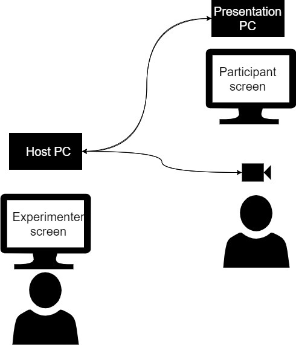
The eye-tracking lab
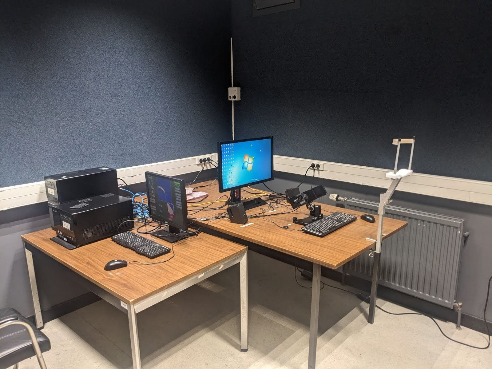The eye-tracking lab
Hardware set up.
- Distance between participant, camera, and participant’s screen are measured.
- Distance participant - monitor: 40-70 cm
- Distance participant - camera: ideal 50-55 cm
- Interplay with screen size.
- /!\ Trackable range of the tracker
- Constant across participants
All in a sound-isolated, no-sunlight room.
The eye-tracking lab
Camera position:
- Slightly below when recording .
- Not too low (problems in upper areas)/high (problems in lower areas) or you may lose CR.
- In desktop-mounted: Alignment with lower part of the monitor.
- In tower-mounted: Above participants’ head.
The eye-tracking lab
Host PC and camera are connected and synchronized. Host PC and Presentation PC are connected and synchronized.
- Recording/Host PC
- Camera set up.
- Records triggers.
- Processes and records eye-tracking data.
- Observe eye movements in real time.
- Presentation PC
- Presentation of stimuli.
- Sends triggers and trial information.
- Control when in time gaze is actually recorded.
- Gathers behavioural data.
The eye-tracking lab
What information do you think is sent between the two computers?
- Areas of Interest
- Triggers
- Experimental condition
- Stimuli per trial
- …
/!\ Keep this in mind when coding the experiment.
Structure of an eye-tracking experiment
Set up
- Welcome participant, instructions
- Including introduction to the eye-tracker
- Check make up
- Camera set up
- Checks prior to experiment
- Comfortable seating
- Focus
- Corners & areas of interest
- Automatic & adjust thresholding
- Checks prior to experiment
- Welcome participant, instructions
Experiment
After it
Structure of an eye-tracking experiment
Set up
Experiment
- Calibration & validation
- Practice trials & familiarisation (optional)
- Experimental phase (recording sequence, block division - optional)
- (Drift correction) Stimulus –> Trigger –> Follow-up
- Goodbye screen
After it
Structure of an eye-tracking experiment
Set up
Experiment
After it
- Post-experimental questionnaires & debriefing.
Participant set up
Briefing
- Explain the experiment and allow them to ask questions.
- Add instructions to the experiment & practice sessions.
- Let them know in advance the experiment structure (e.g., calibration > validation > experiment (practice if there is)).
- Explain (briefly) how the eye-tracker works.
Tempted to ask to not blink?
- Not blinking leads to dry eyes, and ultimately more blinking.
- Instead: Tell them when it is preferred for them to blink (if you decide to mention anything).
Participant set up
Adjust seating
- Chinrest
- Chair height
- Sitting straight
- Head against foreheadrest, chin over chinrest.
Camera set up
Access to eye image
- Hidden image: set-up is automatic.
- Easier to handle but potential for poorer data quality, e.g., data recording issues may go unnoticed.
- Access to image.
- Need for technical knowledge.
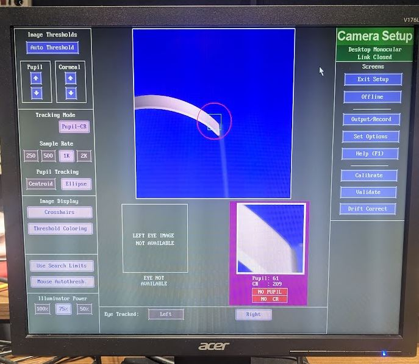
Camera set up
Which eye to track? - Dominant eye (by default, right eye)
Detect the eye
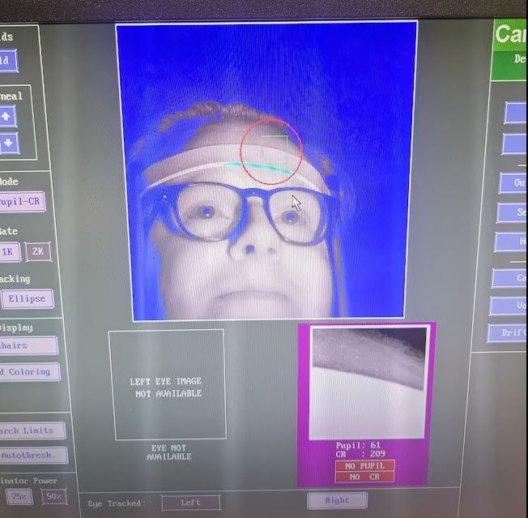
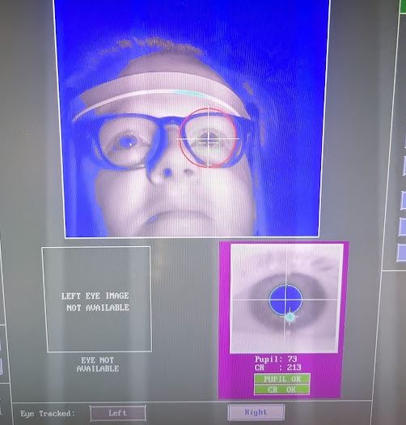
Camera set up
Focus
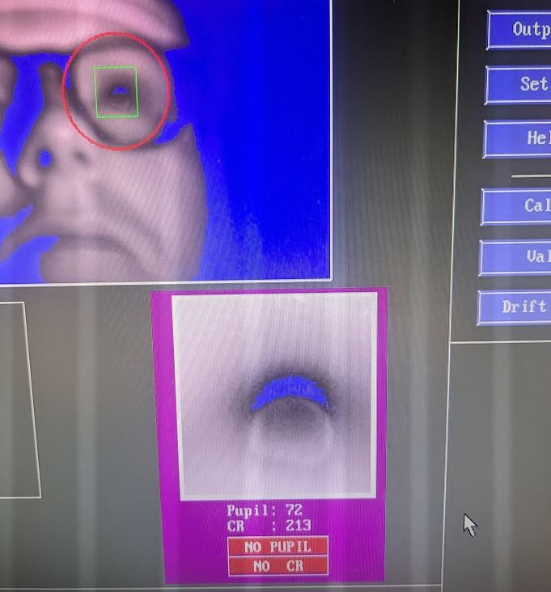
Camera set up
- P-CR tracking:
- Dark blue pupil
- Light blue CR
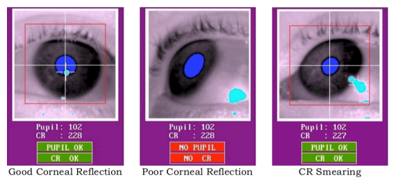 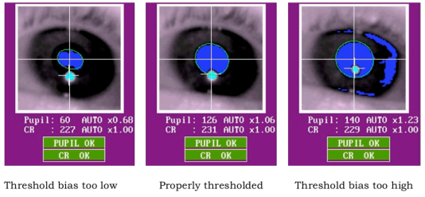
Camera set up
Automatic thresholding + adjustments
- Reflections = impossible eye movements
Pupil tracking
- Centroid versus Ellipse
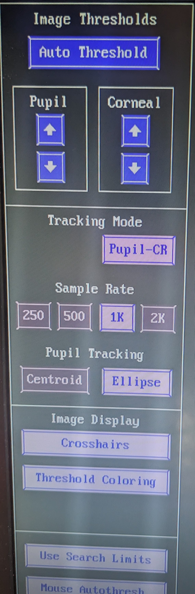
Camera set up
- Ask them to move their eyes around the corners of the screen
- Notice whether we lose track at any place
- Especially near your AIs
- Ensure pupil is not covered
- E.g., hair, glasses frame
Camera set up: Issues
- No mascara
- Dark lashes lead to issues -> confounded with the pupil.
- Eyelids
- Cover the pupil in lower gaze directions
- An issue in some cases (e.g., tired participants)
- Recording from lower then useful.
Camera set up: Issues
- Glasses
- Darker image -> issues in thresholding
- Clean glasses
- Adjust contrast/brightness
- Glasses
- Reflect infrared light
- Clean glasses
- Move camera (angle rather than distance)
- Place reflections far away from pupil and CR
- Move mirror (only possible in tower-mounted eye-trackers)
Camera set up: Issues
- Contact lenses
- Air bubbles between eye and contact lense interact with CR
- Camera focus
- Air bubbles between eye and contact lense interact with CR
- Wet eyes
- Split up the CR
- Breaks
- Stop the experiment
- Dim the light in the lab
- Tell the participant to go home
- Split up the CR
Experiment
Beyond the experiment itself, all eye-tracking experiments share these steps.
- Calibration
- Validation
- Drift correction
Why?
- Because of how gaze position is calculated.
- Estimation from known coordinates = calibration points.
- Accuracy.
Calibration
x,y coordinates of gaze position are estimated from measuring the pupil and the CR on known coordinates (i.e., the calibration points).
Calibration
- Beginning of the experiment (blocks?)
- Fixate on a series of points
- # points ~ accuracy
- 9HV standard
- Smaller AIs need more calibration points
- Higher precision = more calibration points.
- # points ~ accuracy
- Interplay with kind of eye-tracker:
- Portable versus fixed.
Calibration
- Automatic versus manual
- Participants moving their gaze before they should.
- Adults versus children
- Should cover the area where stimuli are presented
Calibration
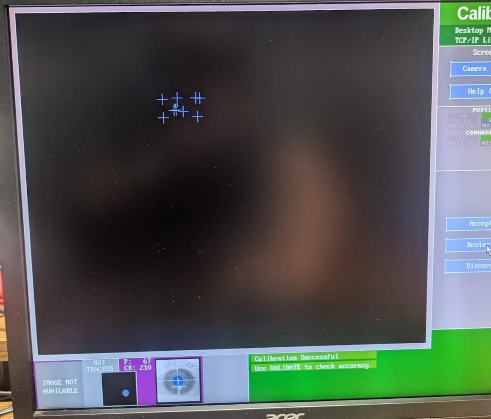
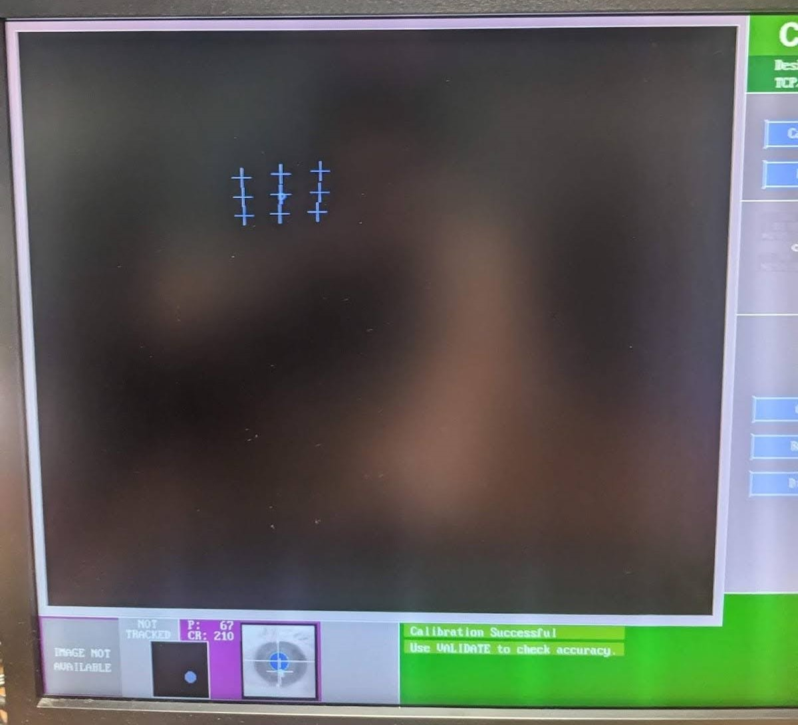
Calibration
Tips:
- Check that pupil and CR are stable on the four corners of the screen.
- Remind participants not to move during the calibration and afterwards.
- Explicitly remind them to look at the center of the point and to look until they disappear.
- Random order presentation.
- Desktop: move camera angle.
- Tower-mounted: move mirror.
Validation
Done after calibration to ensure accuracy. Same principle as calibration.
Validation
- Further accuracy check.
- Whole versus subset
- Error > 0.5, recalibrate.
- Whole versus subset
Validation
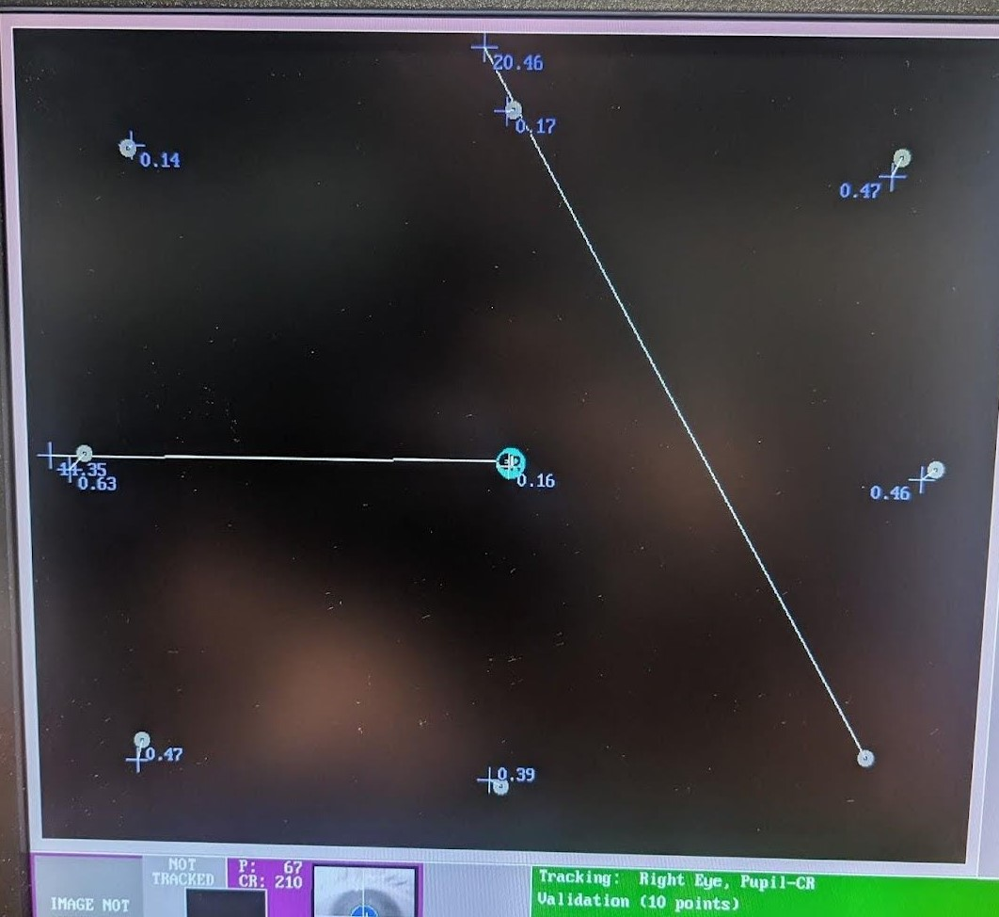
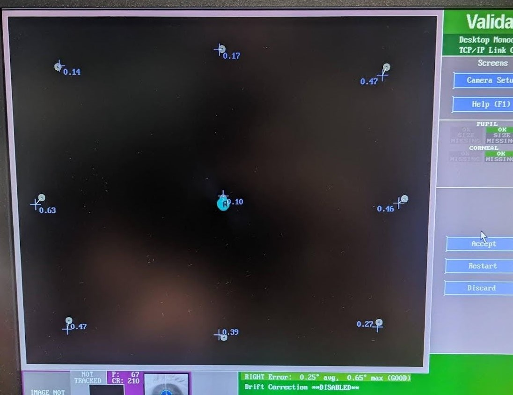
Technically speaking, you could now start recording.
You’d get eye data of your experiment, but…
- How do we make sure that our calibration points are accurate throughout the experiment?
- How can we make sense of the data after the experiment?
- Areas of Interest
- Triggers
During the experiment
During trials
- Lab log
- Adjustments/recalibrations
- Sneezes, sounds
- Data cleaning
- Blinking
- Are they moving their lips while they read?
Drift correction
Every so often, re-check our measurement (accuracy): Drift correction.
- Commonly, each trial/every other trial/blocks
- Ensure accuracy
- Where the fixation cross appears depends on your task.
- At the position where you want high accuracy.
- Reading: e.g., beginning of the sentence/paragraph.
Drift correction

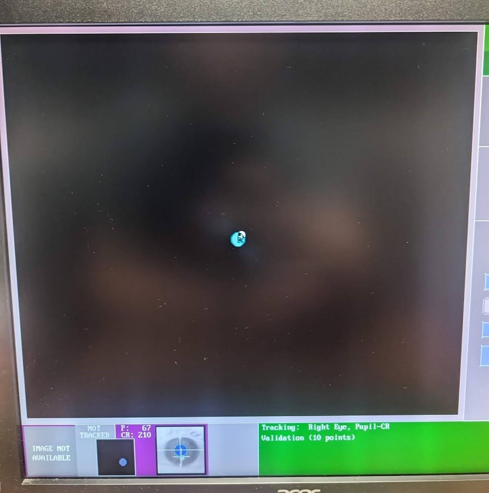
Areas of Interest
Areas of display we are interested in measuring and analysing.
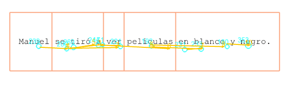
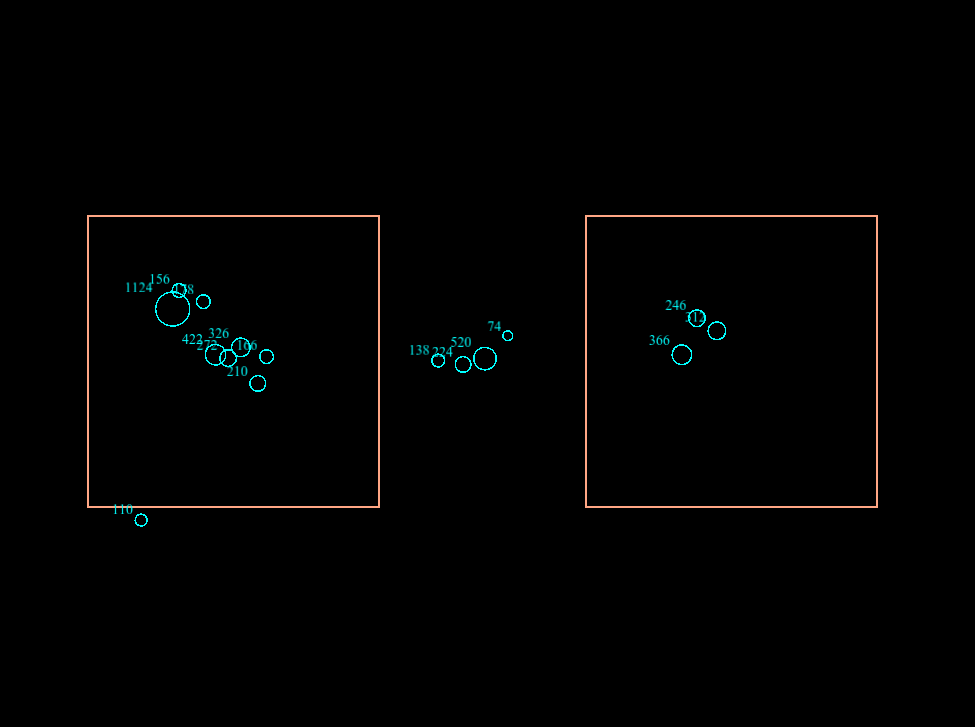
Areas of Interest
Reading
- Word
- Sequence of words
- Part of a sentence
VWP
- Individual images
- Blank space!
Areas of Interest
Reading
Careful definition of AIs.
- Manually versus automatic (individual words)
- Issues: Segmentation of pre-critical and spillover regions.
- Issue: Duplicate data.
- Issue: Classification of eye-movements (regressions)
VWP
Difference between comprehension and production.
- In the latter case, AIs might not be known in advance.
Areas of Interest
Size depends on accuracy and precision of the eye-tracker.
Low accuracy/precision: Bigger areas of interest.
Do not put stimuli close to margins.
- Fixations are generally drawn to the center of a screen.
- Lower precision at margins of a monitor.
Overlapping areas of interest.
Particularly relevant for gaze-contingent paradigms!
Areas of Interest
Text
- Span some pixels below and above.
Pictures
- Enough separation.
- Counterbalance position.
- No overlapping.
Triggers
Trigger: Information about an event, i.e., when it happens.
- Synchronization stimulus PC - host PC
Most basic trigger:
- Trial information (e.g., condition, response)
But when you also have audio:
- When the audio begins and ends, gaze, for example.
Related to stimulus-synchrony!
End of experiment
Any additional data you may want to explore in relation to eye-tracking data.
- Language proficiency?
- Personality traits?
Debriefing
See also Rodriguez Ronderos et al. (2018) - Eye Tracking During Visually Situated Language Comprehension: Flexibility and Limitations in Uncovering Visual Context Effects.
Eye-tracking in language research
Eye-tracking in language research
Thus far, we have covered why we are measuring eye movements, how we measure them, and what eye movements we can measure.
- How does this transfer to language research?
Eye-tracking in language research
Eye-tracking is an online measurement of cognitive processes.
- Different online techniques e.g., EEG, fMRI
- Spatial versus temporal resolution.
- Offline measurements, e.g., comprehension questions.
Ferreira & Yang (2019): Linking offline and online measures can provide a better understanding of how speech is processed and represented.
Eye-tracking in language research
Focus of this course:
- Visual World Paradigm (i.e., speech comprehension)
- Reading Paradigms (i.e., written text comprehension)
Eye-tracking in language research
Visual World Paradigm
- VWP has predominantly been used to investigate speech comprehension as it unfolds, to answer questions such as lexical access, prediction of upcoming elements in the speech signal, or even the interpretation of an utterance away from its propositional content.
Eye-tracking in language research
Visual World Paradigm
Communication is multimodal: Both verbal and non-verbal features exist when we produce and comprehend spoken language, and they can facilitate communication. Disfluencies (e.g., um or uh in English) are predominant in spontaneous speech.
- Do they affect listeners because of beliefs about disfluencies, or because of social reasoning?
- Research question: Whether and how disfluent speech can be interpreted as deceitful, and whether there is an effect of interlocutors’ linguistic background (i.e., native versus non-native interlocutors).
Eye-tracking in language research
Visual World Paradigm
- Treasure hunt paradigm
Eye-tracking in language research
Visual World Paradigm
Eye-tracking in language research
Visual World Paradigm
Eye-tracking in language research
Visual World Paradigm
Conclusions:
- Participants made their decision shortly after the potential location was said (circa 400 ms).
- The presence of a disfluency not only led to more interpretations of deceit, as reflected in the object selected, but also biased eye movements early.
- There was no difference between native and non-native speakers.
The interpretation of deceit triggered by disfluencies is inflexible, and likely heavily anchored in a stereotype of how deceit sounds (without any form of social reasoning).
Eye-tracking in language research
Reading
- We investigate naturalistic reading behaviour to make inferences about underlying linguistic processing mechanisms (lexical access, semantic and syntactic integration, prediction…)
- Stimuli of different length (single sentence vs. text), different tasks (skim for gist, answer specific questions, etc.)
Eye-tracking in language research
Reading
Constructions = grammatical patterns. Their productivity = the number of different words they can be used with. If productivity is high, there are many possible continuations that a sentence with this construction can have (example: “He started to…”). If productivity is low, there are very few possible continuations (example: “He burst into…”).
- In this low uncertainty situation, will a prediction error occur if readers see a continuation they did not expect?
- Research question: Does low productivity of syntactic constructions lead to processing difficulty for unexpected lexical items?
Eye-tracking in language research
Reading
High productivity condition:
- Francisco | se metió a | hablar | de política | con sus amigos
Low productivity condition:
- Francisco | rompió a | hablar | de política | con sus amigos
Eye-tracking in language research
Reading
- Single sentence reading
- Comprehension questions as attention check
Eye-tracking in language research
Reading
Eye-tracking in language research
Reading
se metió a / rompió a
hablar
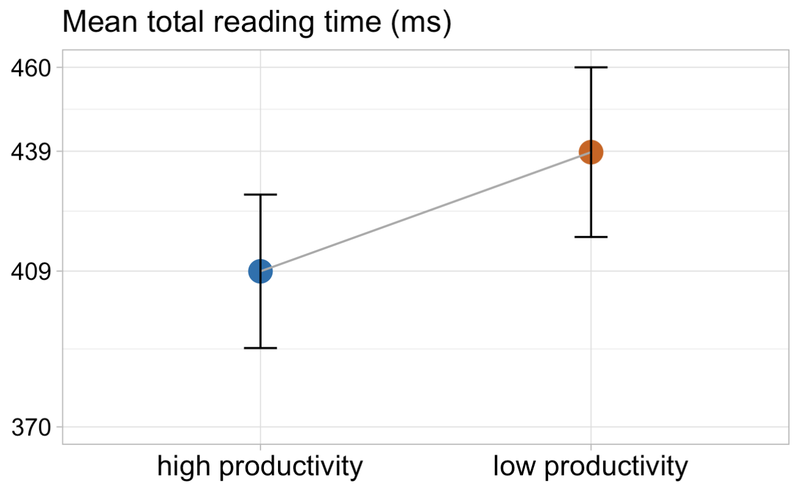
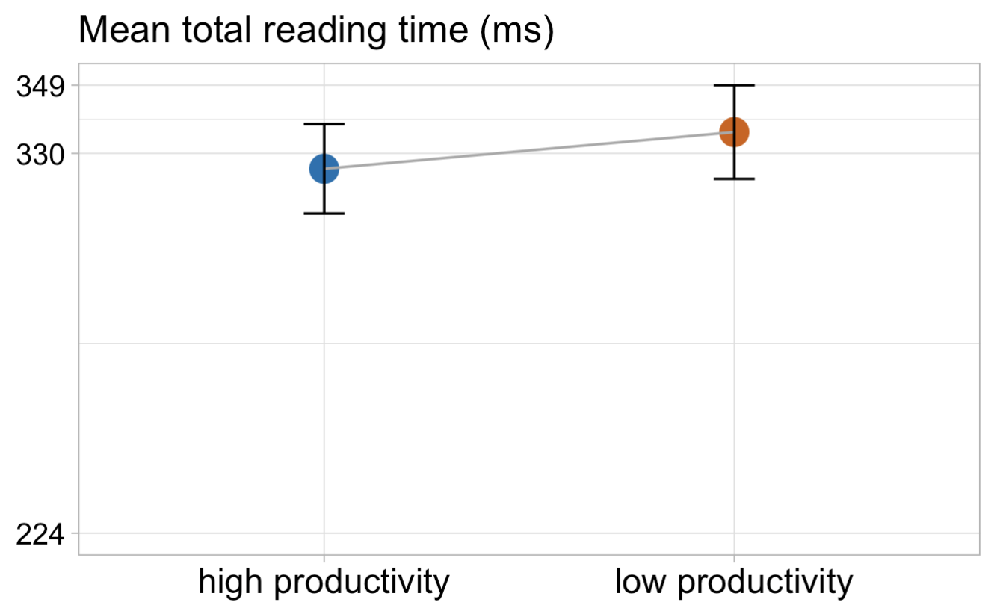
Eye-tracking in language research
Reading
Conclusions:
- Low productivity was not associated with prediction error cost, so processing was not hindered by any unmet expectations.
- Low productivity affected reading (integration and interpretation) of the construction/sentence as a whole.
- Psycholinguistic evidence for the reality of the productivity phenomenon.
Wrap up
Wrap up
- Eye movements are a window to individuals’ minds because attention mediates them.
- In the case of language, we take that people process what they are looking at, and for how long they look signifies how costly it is to process.
- Eye-trackers work by locating the relative position of the pupil thanks to a camera.
- You can investigate both spoken and written language, production and comprehension via the VWP and reading paradigms.
Plan for tomorrow
Visual World Paradigm
- Install PsychoPy
- Download template script
- Recommended reading:
- Altmann & Kamide (1999)
Plan for this week
- Think about a research question
- If only questions regarding one paradigm come to mind, that’s alright.
- Decide on an appropriate paradigm
- Maybe already materials? (pictures & audios, or sentences…)
You can come up with your own idea, or you can take an existing study (see some papers on our GitHub page). Otherwise, tomorrow you can just use the exercise materials we prepared for you if you don’t have time today, so don’t stress it :)
References
Altmann, G. T. M., & Kamide, Y. (1999). Incremental interpretation at verbs: Restricting the domain of subsequent reference. Cognition, 73(3), 247–264. https://doi.org/10.1016/S0010-0277(99)00059-1
Conklin, K., Pellicer-Sánchez, A., & Carrol, G. (2018). Eye-tracking: A guide for applied linguistics research. Cambridge University Press.
Ferreira, F., & Yang, Z. (2019). The problem of comprehension in psycholinguistics. Discourse Processes, 56(7), 485–495.
Holmqvist, K., Nyström, M., Andersson, R., Dewhurst, R., Jarodzka, H., & Van de Weijer, J. (2011). Eye tracking: A comprehensive guide to methods and measures. OUP Oxford.
Hutton, S. B. (2019). Eye tracking methodology. Eye movement research: An introduction to its scientific foundations and applications, 277–308.
Javal, E. (1879). Essai sur la physiologie de la lecture. Annales d’oculistique, 82, 242–253.
Just, M. A., & Carpenter, P. A. (1980). A theory of reading: from eye fixations to comprehension. Psychological review, 87(4), 329.
References
King, J. P., Loy, J. E., & Corley, M. (2018). Contextual effects on online pragmatic inferences of deception. Discourse Processes, 55(2), 123–135.
Magnuson, J. S. (2019). Fixations in the visual world paradigm: where, when, why?. Journal of Cultural Cognitive Science, 3(2), 113–139.
Papoutsaki, A., Sangkloy, P., Laskey, J., Daskalova, N., Huang, J., & Hays, J. (2016). WebGazer : Scalable webcam eye tracking using user interactions. International Joint Conference on Artificial Intelligence.
Pickering, M. J., Frisson, S., McElree, B., & Traxler, M. J. (2004). Eye movements and semantic composition. On-line study of sentence comprehension: Eyetracking, ERPs and beyond, 33–50.
Rodriguez Ronderos, C., Münster, K., Guerra, E., Kreysa, H., Rodríguez, A., Kröger, J., Kluth, T., Burigo, M., Abashidze, D., Nunnemann, E., & Knoeferle, P. (2018). Eye Tracking During Visually Situated Language Comprehension: Flexibility and Limitations in Uncovering Visual Context Effects. Journal of Visualized Experiments: JoVE, 141. https://doi.org/10.3791/57694
Trueswell, J. C. (2008). Using eye movements as a developmental measure within psycholinguistics. Language acquisition and language disorders, 44, 73.
Yarbus A. L. (1967). Eye movements and vision. New York: Plenum.

Introduction to eye-tracking